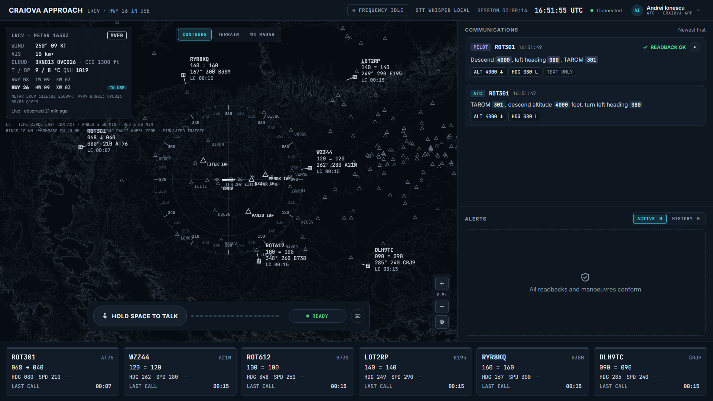
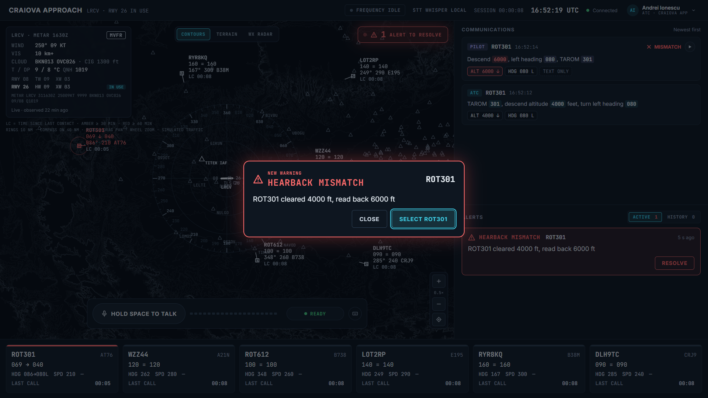
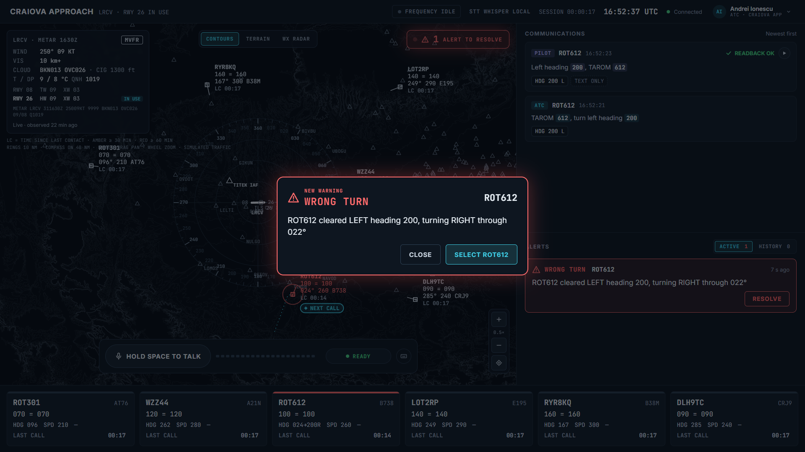
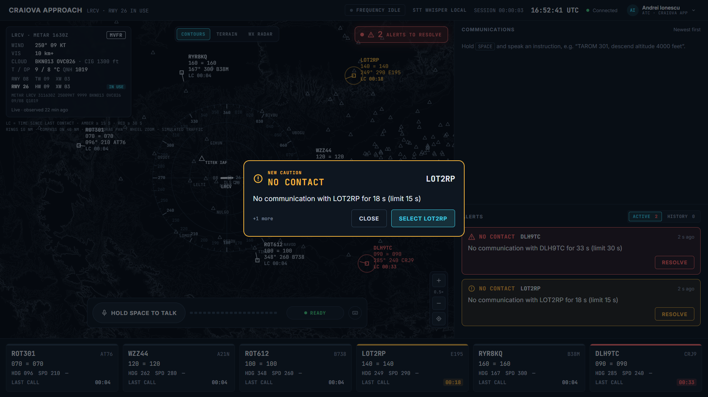
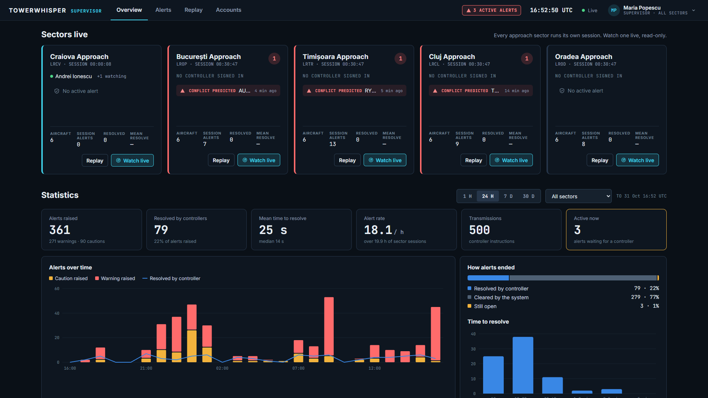

Radarul știe unde e avionul. Nu știe ce i s-a spus.
Vocea pe VHF e încă canalul principal în apropiere și în turn; datalink-ul text (CPDLC) e folosit mai ales în spațiul aerian superior.
Readback / hearback: pilotul repetă instrucțiunea greșit, iar controlorul, ocupat cu alte avioane, nu observă. E un factor cunoscut în level bust-uri și incursiuni pe pistă.
Nimic nu leagă azi vocea de radar. Sistemele știu poziția, nu și instrucțiunea.
Un controlor dă zeci de instrucțiuni pe oră și trebuie să asculte fiecare confirmare.
ATC descend 3000
PILOT descend 5000
Dacă controlorul e ocupat, nu prinde nimeni.
Soluția
TowerWhisper ascultă instrucțiunile și îi spune controlorului când un avion nu a înțeles sau nu face ce i s-a cerut.
1 · Readback
Pilotul a repetat corect?
Readback-ul pilotului e comparat cu instrucțiunea: altitudine, cap, sens de viraj, pistă, frecvență.
HEARBACK MISMATCH
2 · Execuție
Avionul face ce i s-a cerut?
Manevra e urmărită pe radar până la țintă: viraj, urcare / coborâre, oprire la nivel.
WRONG TURN · LEVEL BUST
3 · Ultimul contact
Cu cine n-am mai vorbit de mult?
Fiecare avion are un timer de la ultima transmisie: galben la prima limită, roșu la a doua.
NO CONTACT
Cum funcționează
De la voce la alertă, în câteva secunde
ATCTAROM 301, descend altitude 4000 feet, turn left heading 080
PARSERROT301 · ALT 4000 ↓ · HDG 080 L · parsePath: rules
PILOTDescend 6000, left heading 080, TAROM 301
ALERTĂHEARBACK MISMATCH · ROT301 cleared 4000 ft, read back 6000 ft
Ecranul controlorului
Trafic normal

Radar cu 6 avioane în jurul LRCV, instrucțiunile parsate, readback confirmat cu verde.
Readback greșit
HEARBACK MISMATCH

S-a cerut 4000 ft, pilotul a confirmat 6000 ft. Alerta spune motivul, cu valorile.
Execuție greșită
WRONG TURN

Readback corect, dar avionul virează în sens opus. Alerta apare după 4 s de abatere.
Timp de la ultimul contact
NO CONTACT

Galben la 30 min, roșu la 60 min (în demo 15 / 30 s). Dispare la următoarea transmisie.
Panoul de demo · /demo
Erorile pilotului, la comandă, de pe telefon
Juriul vede doar ecranul mare; erorile se declanșează discret de pe telefon.
Erori de readback și de execuție, în modul ONCE sau PERSISTENT.
Contor live: erori injectate, detectate, timp mediu de detecție.
Nu are nevoie de microfon și nici de cont.
Conturi și sectoare
Supervizor și poziția de lucru

Cinci sectoare rulează în paralel. Controlorul se autentifică pe poziția lui; supervizorul vede toate sectoarele, statistici și replay.
Arhitectura sistemului
Browserul afișează, backend-ul decide
Fără chei API aplicația pornește oricum: STT local, voce din cache, instrucțiuni tastate ca rezervă.
Arhitectura backend · NestJS
O transmisie, pas cu pas
1POST /api/transmissions: audio → text (Whisper)
4 Pilotul dă țintele simulatorului după 2–3 s, alterate dacă e armată o eroare de execuție
2 Text → Clearance, salvat în Postgres; comms:transmission
5 La fiecare tick: ConformanceMonitor și CommsWatchdog
3 Readback din șablon (+ eroarea din DemoControl), trecut prin același parser → ReadbackChecker
6alert:raised / alert:cleared pe toate ecranele
Parser-ul de frazeologie ATC
Reguli întâi, LLM doar ca rezervă
Normalizare (din testele parser-ului)
tree thousand fife hundred → 3500
flight level six zero → fl060
runway zero niner → rwy09
Lufthansa nine tango charlie → 9tc
Callsign-ul se caută doar printre avioanele din sesiune; altfel, avionul selectat pe radar.
LLM-ul rulează doar dacă nicio regulă nu prinde, iar răspunsul e validat față de tipul Clearance.
Intrare
TAROM 301, descend altitude 4000 feet, turn left heading 080
Măsurat: 84 / 84 fraze din setul de test text (test/phrases.json) parsate corect, pe toate câmpurile.
Motorul de siguranță · SafetyModule
Patru verificări, toate cod determinist
ReadbackChecker
La fiecare readback: valoare diferită, câmp lipsă, nimic în 8 s.
HEARBACK MISMATCH ROT301 cleared 4000 ft, read back 6000 ft
ConformanceMonitor
La fiecare tick; abaterea trebuie să persiste 4 s. Viraj opus, sens vertical opus, level bust.
WRONG TURN ROT612 cleared LEFT heading 200, turning RIGHT through 019°
CommsWatchdog
Timp de la ultimul contact: 30 / 60 min (configurabil), 15 / 30 s în demo.
NO CONTACT No communication with DLH9TC for 33 s (limit 30 s)
ClearanceProbe · bonus
Traiectoria pe 5 min: sub 3 NM și sub 1000 ft.
CONFLICT PREDICTED DLH2MP and THY7KM predicted 1.1 NM / 900 ft apart in 5 min 0 s
Modelul de date și contractul real-time
Tipurile comune stau în packages/shared
PostgreSQL · tabele
sessions
o sesiune per sector
transmissions
transcriere, audio, latență
clearances
instrucțiunea parsată (jsonb)
alerts
mesaj, detalii, cine a rezolvat
fault_events
erorile injectate din demo
traffic_frames
radarul la 2 s, pentru replay
users
conturi și roluri
Socket.IO /live · server → client
traffic:update
toate avioanele, 4 Hz
comms:transmission
după fiecare PTT
comms:readback
ok · mismatch · incomplete
clearance:issued
odată cu transmisia
alert:raised
la detecție
alert:cleared
când condiția dispare
REST doar pentru comenzi: /api/transmissions, /api/demo/*, /api/alerts.
Siguranță prin design
AI-ul înțelege vorbirea. Nu ia decizii de siguranță.
AI doar pentru vorbire
Transcriere, vocea pilotului și frazele pe care regulile nu le recunosc.
Verificări deterministe
Readback, conformitate și conflicte: TypeScript, fără apeluri de rețea.
Doar advisory
Sistemul avertizează, nu dă instrucțiuni. Controlorul decide.
Merge fără chei AI
Whisper local; vocea din cache; fraze tastate ca rezervă.
Fiecare alertă se explică singură: tipul, avionul și valorile, în clar.
Arhitectura de implementare
Pe serverele clientului, nu pe ale noastre
Prototip vs produs
Ce se schimbă la un client real
În prototip
În produs
De ce
Controlorul apasă Space în browser
Audio preluat pasiv din sistemul de voce (VCS), pe fiecare frecvență, inclusiv vocea piloților
Controlorul nu face nimic în plus
Trafic simulat
Date radar reale în formatul european ASTERIX, plus planurile de zbor
Verificăm avioanele reale
Whisper și Claude prin API, în cloud
Model de recunoaștere vocală rulat local, antrenat pe frazeologia ATC; fără LLM extern
Datele nu ies din rețea
Conturi locale în aplicație
Conturi prin SSO / Active Directory
Fără parole în plus
Ecran separat în browser
Întâi ecran advisory auxiliar; apoi integrat în stația de lucru prin furnizorul ei
Integrarea directă o fac furnizorii ATM
Cum ajunge interfața la controlor
Trei pași, de la simulator la radarul existent
Pasul 1
Pregătire și shadow mode
În simulatoare: interfața completă. În shadow mode controlorul nu vede nimic; alertele le vede doar echipa de siguranță.
Pasul 2
Ecran auxiliar mic
La poziția de lucru, doar alertele active și timerele de comunicare, fără radar propriu.
Pasul 3
În radarul existent
Eticheta avionului colorată și câmpul „LC”, integrate de furnizorul sistemului ATM.
Roluri
Controlor
alertele sectorului lui
Supervizor
toate sectoarele, pragurile
Analist de siguranță
istoric și statistici
Administrator
instalare, actualizări, jurnal de acces
Clienți și piață
Plătesc furnizorii de navigație aeriană (ANSP)
Actor
Rol pentru noi
Exemple
ANSP
Clientul principal
ROMATSA, DFS, DSNA, ENAV, ENAIRE
Centre de pregătire ATC
Primul client realist, fără risc operațional
centrele ANSP-urilor, școli de controlori
Furnizori de sisteme ATM
Canal de distribuție
Frequentis, Thales, Indra
SESAR Joint Undertaking
Finanțare și validare
apeluri SESAR / Horizon Europe
EASA
Regulatorul, nu client
atestarea echipamentelor ATM/ANS
Echipamentele ATM/ANS din UE se atestă după Regulamentul delegat (UE) 2023/1768, aplicabil din septembrie 2023, de regulă împreună cu ANSP-ul și un furnizor de sisteme.
Lansare pe etape
Întâi fără risc operațional, apoi operațional
Prototip
acum
Aplicația de la hackathon, trafic simulat. Dovedim că merge.
Pregătire și analiză
estimat 3–6 luni
Simulatoare și analiză offline. Centre de pregătire.
Shadow mode
estimat 6–12 luni
Frecvența și radarul reale, alertele doar se salvează. Un ANSP pilot.
Advisory operațional
estimat 12–24+ luni
Alertele la controlor, pe un sector. Atestare EASA.
Scalare
după etapa 3
Mai multe sectoare și ANSP-uri, prin furnizori.
Duratele sunt estimări, nu angajamente. Etapele 2–3 se finanțează prin SESAR / Horizon Europe, în parteneriat cu un ANSP.
Model de business și scalare
Licență per poziție, un server per centru
Venituri
Licență anuală per poziție de lucru sau per sector, cu instalare, mentenanță și suport.
Licență per centru pentru modulul de pregătire și analiza offline.
Granturi SESAR / Horizon Europe.
Prețurile se stabilesc cu un client pilot, nu le inventăm acum.
Scalare tehnică
Modelul de voce se re-antrenează pe datele fiecărui ANSP.
Concurență și riscuri
Problema e validată. Diferența e execuția.
SESAR HAAWAII
DLR, NATS, Isavia, 2020–2022. Prototip de cercetare pentru erori de readback: peste 80% din erori prinse în teste offline.
TowerWhisper
Verifică în plus execuția pe radar și timpul de la ultimul contact, într-un produs ușor de instalat.
Risc
Răspuns
Certificarea durează ani
Începem cu pregătire și analiză offline
Achiziții ANSP lente
Granturi SESAR, furnizori deja contractați
Accente și zgomot
Antrenare pe datele ANSP; shadow mode
Alarme false
Praguri reglabile, persistență, măsurare
Înregistrări sensibile
On-premise, roluri, jurnal de acces, GDPR
HAAWAII, furnizori mari
Execuție + timp de comunicare; sau modul pentru un furnizor mare
Încercați
Sunteți CRAIOVA APPROACH
1
Țineți apăsat Space
2
Spuneți instrucțiunea, cu indicativul la început
3
Eliberați și ascultați pilotul
Avioanele
TAROM 301
ROT301
AT76
WIZZ 44
WZZ44
A21N
TAROM 612
ROT612
B738
Pe panoul de demo, o singură dată
TARGET
Selected
MODE
ONCE
COMMS TIMER
30 / 60 min 15 / 30 s doar la testul 9
Scenariu de test · 1 / 2
Testele 1–5: readback
#
Panou demo
Spuneți
Rezultat așteptat
1
nimic
TAROM 301, descend altitude 4000 feet, turn left heading 080